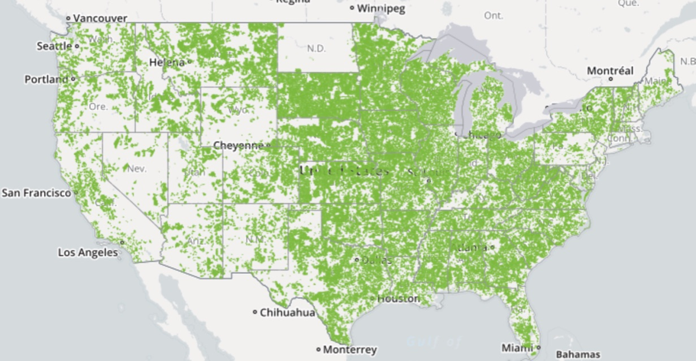
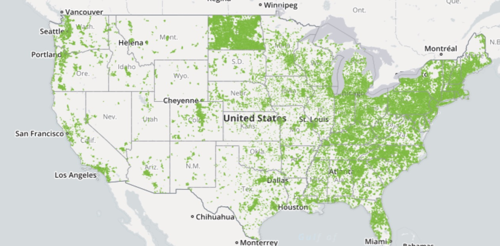
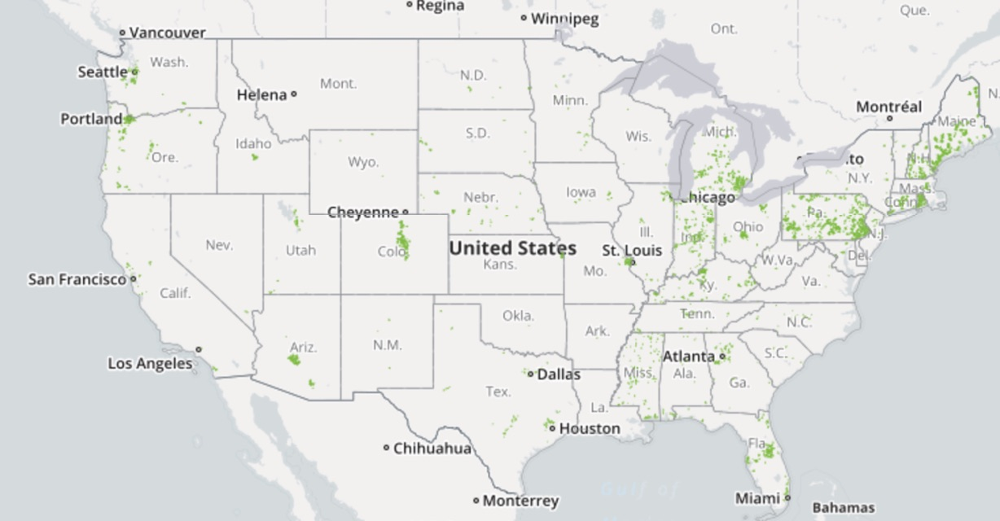

On Internet Privacy - 31 March 2017
Prologue #
I don’t like to post or write about politics. I’m much more interested in education and exploration of the kinds of topics I cover, and carefree writing. That said, I also feel that I can’t ignore it when the world of politics steps into the world of computer science; I would be doing a disservice to this website, to my (small) readership, and to myself if I ignore it and don’t speak up and voice my opinion.
If you’re an employer or potential employer, have a personal relationship with me, or are sensitive about these politics, you may want to skip this post unless you can’t divorce your personal opinions on politics from the technical insight and the opinions I state here.
The Situation #
As you may be aware, there is pending legislation surrounding individuals’ privacy as it pertains to internet service providers. The legislation will most likely be enacted into law at this point, and while it’s certainly possible that it won’t pass, it most likely will. Even if it doesn’t, it will almost definitely come up again.
So what is this legislation? It’s essentially just rolling back some interpretations of the law that were held during the previous presidency. These interpretations put some restrictions on what your ISP can do with the information collected on you. The collection of this information is natural, in the same way that it’s natural that your doctor keeps your medical records. The question addressed by this legislation is what your ISP can do with that information. Naturally, it’s nowhere near as sensitive as medical records, and there’s no real substantial regulation or definite guidelines surrounding what can be done with this information, in large part due to how young the internet is. In particular, this legislation aims to void the interpretations of existing law (originally intended for phone communications) and to loosen up the restrictions TeleCom companies face regarding what they can do with their data.
Currently, your ISP can use your data for some things, ranging from improving your service (some do this more than others… Comcast.) to personalizing ads. Yes, like Facebook and Google do. Personally, I don’t have an enormous issue with this in pure principle, because Facebook and Google already do this, and at this point companies using your data to personalize advertisements and to sell to advertisers is a given. The big issue that comes from this is that your ISP has records of every website you visit, every server you connect to, and can even tell when you’re compulsively reading Cracked article after Cracked article at 3AM because you had too much coffee and now you can’t sleep. Now, they can’t necessarily see what you’re reading, just who you’re reading it from (if you’re not using encryption, i.e. HTTPS, they can absolutely see it). But that can still tell you a lot, and frankly we don’t really know what will happen once ISPs are given this much free reign with personal data. What we do know is that it will lead to repositories of data - linked to people, locations, addresses, and computers - the likes of which has never been seen before. Predictably, privacy advocates see this as a bad thing
The Sides #
There are, essentially, two sides in this debate. The first is the more powerful, the TeleCom companies. The second is privacy advocates.
TeleCom companies, of course, want to maximize their profit. The existing regulations are, supposedly (I am not disputing this here, I am not a lawyer), complex and difficult to understand. This is likely true, and if it is, merits change. They also restrict what these companies can do with this information. They, no doubt, will sell it (primarily to advertisers) for additional profit. In theory this will be passed on to consumers in the form of savings on service.
Privacy advocates, on the other hand, take a somewhat draconian stance in the opposite directions. Most would probably like for all consumers’ data to be fully private. Similarly to doctor-patient confidentiality, your ISP would only be able to use your information internally, and then only with people and processes that require it to provide better service to you. They would like similar restrictions on sites like Facebook and Google, but honestly, that will never happen. In those cases, they’re more likely to advocate for ensuring that there’s as little information linking consumers and their data when their data is sold.
Many computer scientists are privacy advocates. That said, many also believe that big data collection and analysis is the way of the future, and that the privacy enjoyed in the last century is an antiquated idea. I sit somewhere in the middle, but I tend to agree with privacy advocates in most cases. But I also use Google and Facebook heavily, so I’m a hypocrite. Most of us are, at one level or another; protecting your privacy is getting harder and harder.
Some Quick Economics #
An externality is the cost or benefit of a business or product that does not affect the owner. For example, a negative externality of a paper manufacturing plant is the drop in nearby property prices nearby due to the smell. This doesn’t affect the plant, but other people pay the price. There are two types of protections against negative externalities. The first is the free market. If a company is damaging the environment, you can vote with your wallet by taking your business elsewhere until they change their behavior. The second is government regulation. The government can step in, enacting laws and fines to encourage businesses to contain their negative effects.
Conservatives will argue that the first is the superior approach, and liberals will argue that the second is the correct approach. But whichever side you fall on, it’s hard to dispute that the first doesn’t apply in the situation if the driving force, competition, is not present. As it applies here, most people can’t or won’t very well go without internet service. In this case, depending on where you live, internet service will be at best an oligopoly, but most likely a monopoly. Most places in the country are serviced by a single ISP, and almost all have 3 or less. That’s not competition. To make this point, I’ve prepared 3 maps, powered by BroadbandMap.gov. For this reason, government regulation is the only even mildly effective tool we have at controlling the externalities of the TeleCom industry. If you have evidence otherwise, feel free to contact me with the link above.
1 ISP #

2 or more ISPs #

4 or more ISPs #

As you can see, there’s very little competition in broadband providers, and in most of the country, there is none. I think I’ve adequately made that point. As such, the free market cannot be counted on to provide sufficient alternatives when these companies decide to take certain actions.
What do I do? #
You may not care about your privacy - but many do. If you don’t, I encourage you to still consider advocating against this type of legislation, as those who do want to be protected should be. I’d encourage the reader to take action by donating to the Electronic Frontier Foundation, a non-profit organization that aims to protect your rights in the Information Age.
1. VPN #
Now, once these are enacted, if you want to protect yourself, I’ll offer a few methods to do that. The first, and easiest (though not free) is to research and pay for a VPN service. This routes all your internet traffic through a third-party, where the price of membership includes the price of privacy. For more technical users, it may also be possible to host this yourself, using Amazon Web Services or another cloud computing provider - but I don’t know how cost-effective or how difficult this would be.
2. Tor #
Tor is a browser dedicated to anonymous browsing and evasion of censorship. Basically, using it lets you get around any sort of censorship (I used it for this in my MPS days), is free, and can also be used to access the “dark web” (though aside from being academically interesting, I don’t have much use for or recommend using). It is free.
It’s not perfect security-wise (if you remember a few years back, the drug marketplace The Silk Road was busted) and while it’s far from perfect, unless you’re a drug kingpin, figuring out who you are is a LOT of work for not much reward, and realistically, no one will bother.
Finally, I’ll cover some history of the Tor network. I know, it’s boring, but it can be important to understand the context of a tool this important. It was created as an independent non-profit, with the main goals being internet privacy and censorship avoidance, especially for people living under oppressive government regimes. It took off after it was funded by various third parties, including the U.S. government and google. That said, it has maintained its independence and integrity.
There are various ways to use Tor. The easiest is the Tor Browser, which is an internet browser that routes all of its traffic through the Tor network. For those more technically inclined, Tor can also be run through a socket on your computer, and route all of your traffic through a SOCKS proxy.
Concluding #
I hope you’ve found this article interesting and/or useful, and found my conjecture to be reasonable. If you have any vitriol to direct at me, I invite you to visit the Complaints Department. If you enjoyed the article, please share with your friends and family so we can have a better informed world.